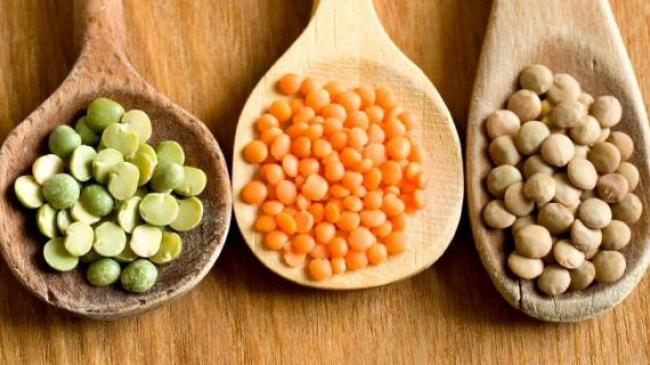
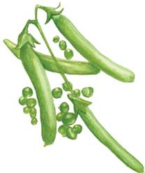
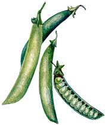
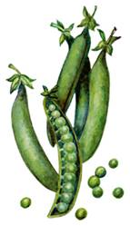

Среди данных сортов хорошо зарекомендовали себя достаточно проверенные на огородах Нечерноземья Кубанец, Овощной, Превосходный и Юбилейный.
Самый ранний из вышеназванных – Овощной 76. От массовых всходов до формирования зрелого зеленого горошка проходит всего 1,5 месяца. Горошек имеет приятную светло-зеленую окраску, пригоден для консервирования на длительный срок. Семена имеют угловато-квадратную форму и желтый цвет, их поверхность морщинистая.
Бобы располагаются на высоких (около 70 см) стеблях над поверхностью почвы.
Кубанец 1126Этот сорт включают в группу среднеранних. До потребительской спелости требуется 52–60 дней, начиная от массовых всходов растения. Они имеют компактные стебли небольшой высоты (50–55 см). Бобы окрашены в яркий зеленый цвет, горошек темно-зеленый.

Это один из наиболее популярных для консервирования и потребления в свежем виде раннеспелый сорт (от появления всходов до технической спелости гороха проходит всего 1,5 месяца). Боб имеет саблевидную форму с острыми концами, длиной 7–8 см. Высота стебля – 55–70 см. Бобы созревают довольно дружно, что удобно для уборки урожая. Окраска горошка ярко-зеленая.
АдагумскийСозревшие семена желтеют и становятся морщинистыми.
Зеленый горошек этого сорта ценится за пригодность для консервирования. Это среднеспелый сорт, слабо поражаемый болезнями – аскахитозом и мучнистой росой. Стебель растения может достигать высоты 80 см, окраска кожицы зеленая, междоузлия укороченные. Имеются четко выраженные усики. Окраска цветков белая.
Форма бобов прямая, с заостренными концами, цвет боба темно-зеленый, семян желтовато-зеленый или зеленовато-желтый. Поверхность семян морщинистая, с четким рубчиком посередине.
В каждом бобе по 7–9 семян. Всего же бобов на одном растении 8-14 в зависимости от ухода и климатических условий.
АтлантЭто среднеазиатский типичный лущильный сорт, дающий прекрасную продукцию для консервирования и потребления в свежем виде. Он достигает зрелости через 57–64 дня, высота стебля 60–65 см, цвет ярко-зеленый, междоузлия укороченные. Белые цветки располагаются на укороченных цветоносах, формируя в среднем по 7 бобов на одном растении.
Заостренные бобы длиной 9-10 см слабо изогнуты. Внутри боба находится 6–7 семян желто-зеленого цвета с морщинистой поверхностью и квадратно-сдавленной формы.
Ширина боба – 1,3 см.
ВераЭто раннеспелый сорт лущильного назначения, пригодный для консервирования и потребления в свежем виде. Высота растения небольшая – 55–70 см, поэтому сорт относят к группе полукарликовых. В соцветии всего 2 цветка. В бобах по 7 семян, длина боба 8 см, форма остроконечная, без изгибов, прямая. Семена после полного созревания желто-зеленые, со вмятинками, как у мозгового зеленого горошка. В технической спелости, цвет семян ярко-зеленый.
ВиолаЭтот замечательный сорт для консервирования относится к среднеспелым. Для получения горошка требуется 65–80 дней после появления массовых всходов. Стебли высотой 70-105 см, прямостоячие, цветки распускаются одновременно, обеспечивая дружное созревание бобов. На стебле обычно находится до 12 бобов, они прямые, с острыми концами, длиной 8 см. Семена имеют зеленую окраску.

Сбор бобов этого сорта начинается на 67-80-й день после появления массовых всходов, поэтому Восход включен в группу среднепоздних. Дает отличную продукцию. Стебли практически не подвержены полеганию, высота – 65–75 см. Бобы созревают дружно, остроконечные, крупные.
Горошек имеет высокие вкусовые качества, цвет ярко-зеленый, почти темно-зеленый.
Воронежский зеленыйСобирают урожай этого сорта гороха на 53-60-й день после появления массовых всходов, в технической спелости. Характерная особенность – стебель с восковым налетом, цвет темно-зеленый. Высота растения – 70–85 см. Цветки белоснежные, располагаются попарно, из них формируются зеленые, остроконечные, слабоизогнутые бобы по 12–16 штук на одном стебле. Семена желтые или изумрудно-зеленые с заметным четким белым рубцом.

ДиангаСорт устойчив к аскохитозу. Семена выровнены по размеру, форме и цвету.
Сорт относится к группе среднеспелых. После массовых всходов техническая спелость наступает на 53-70-й день. Высота стебля – 94–96 см. Боб до 11 см длиной, темно-зеленый, заостренный на конце, с 10 семенами внутри.
Форма боба слабоизогнутая. Окраска семян светло-зеленая или матовая, поверхность сильноморщинистая.
Сорт устойчив к поражению мучнистой росой и вирусом мозаики.
ПремиумЭто раннеспелый сорт, предназначенный для консервирования, замораживания и потребления в свежем виде.
Отличается одновременным дружным созреванием бобов.
Высота прямостоячего стебля зеленого цвета около 80 см. Из белых цветков среднего размера формируются плоды длиной до 8 см, слегка изогнутые, с 9 семенами темно-зеленого цвета внутри. В среднем на одном растении формируется 14 бобов с пергаментным слоем внутри.
Семя морщинистое, окраска темно-зеленая, размер средний, семена выровнены по форме и массе.
СовершенствоОт массового появления всходов этого сорта до сбора урожая проходит от 65 до 75 дней, как и у прочего раннеспелого гороха. Созревает настолько дружно, что достаточно одноразового сбора бобов на зеленый горошек.
Имеет прямостоячий неполегающий стебель высотой от 50 до 60 см.
ФрагментЭто универсальный сорт, относящийся к группе среднеспелых, пригодный для потребления в свежем виде и для консервирования. От массовых всходов до начала сбора бобов проходит не менее 54 дней. Длина стебля 50–60 см, цвет кожицы на стебле зеленый.
Бобы длиной 9 см, изогнутые, с заостренной верхушкой, после полного вызревания приобретают желтый оттенок, в них формируется от 6 до 10 семян. Они угловато-округлые, со светло-зеленой окраской.
Недостаток сорта – слабая устойчивость к поражению аскохитозом.
Юбилейный 1512Сорт относится к среднепоздним. От появления всходов до созревания зеленого горошка проходит 70 дней. Высота стебля – 60–70 см. Зеленый горошек имеет темно-изумрудную сочную окраску. После полного созревания семена становятся желтыми и угловато-квадратными.
При правильном уходе стебли гороха не полегают, что облегчает уборку бобов.